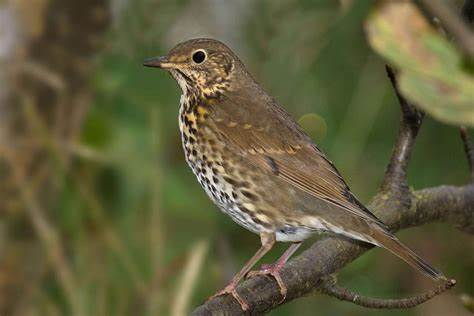
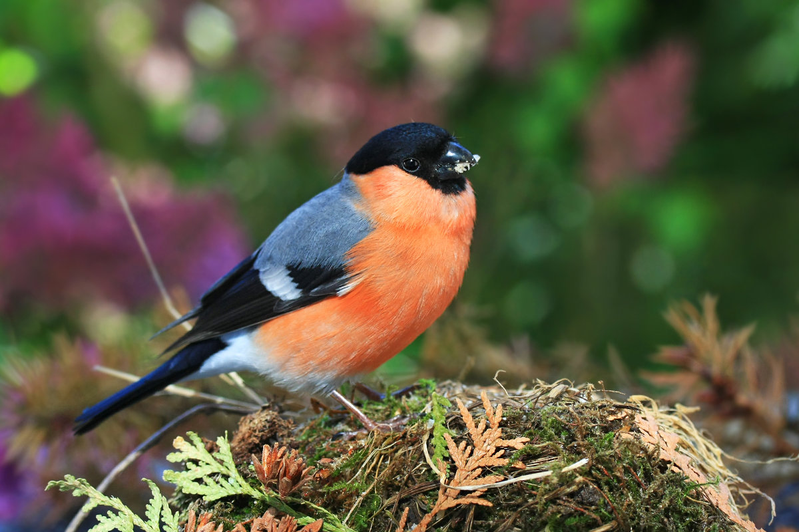
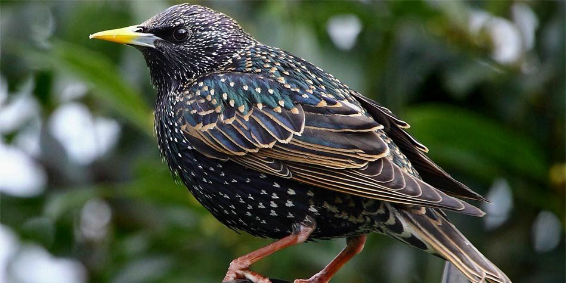
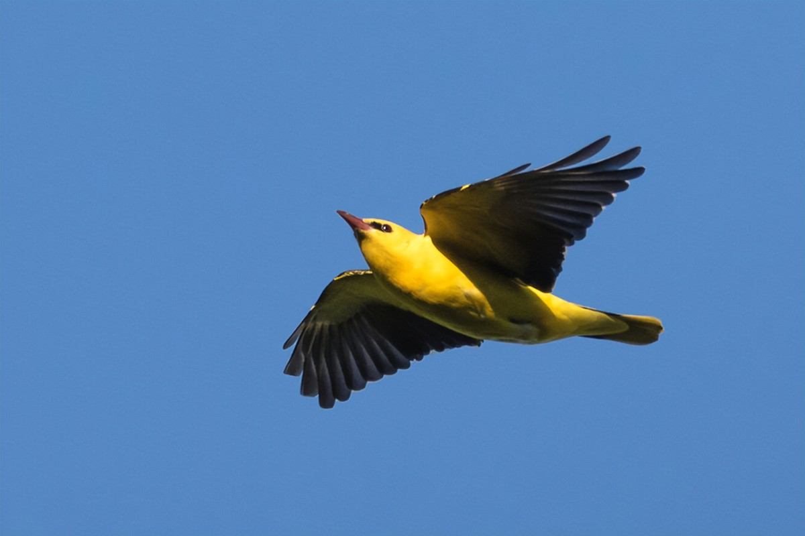
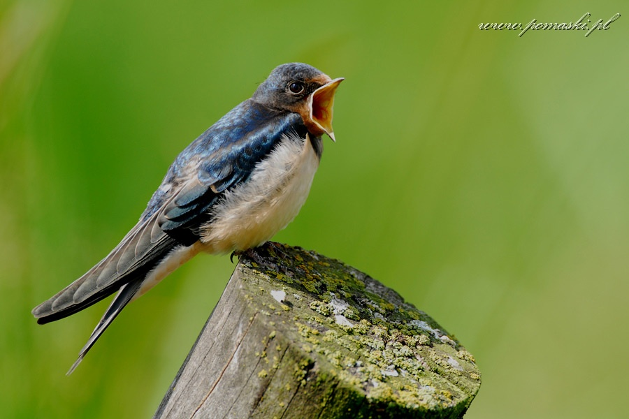

Drozd śpiewak, śpiewak (Turdus philomelos) – gatunek średniej wielkości ptaka z rodziny drozdowatych (Turdidae), zamieszkującego Eurazję.
Gil zwyczajny
gil zwyczajny (P. pyrrhula pyrrhula) – północna, południowo-środkowa i wschodnia Europa do centralnej Syberii. Obejmuje też P. pyrrhula paphlagoniae z północno-zachodniej Turcji
Szpak
Szpak zwyczajny, szpak (Sturnus vulgaris) – gatunek średniej wielkości ptaka z rodziny szpakowatych (Sturnidae). Częściowo wędrowny. Pierwotnie zamieszkiwał wyłącznie Eurazję. Nie jest zagrożony wyginięciem.
Wilga
Wilga zwyczajna - gatunek średniej wielkości wędrownego ptaka wróblowego z rodziny wilgowatych (Oriolidae), jedyny z tej rodziny rozmnażający się w północnej strefie umiarkowanej. Nie jest zagrożony wyginięciem, populacja uznawana jest za stabilną.
Jaskółka Dymówka
Dymówka, jaskółka dymówka (Hirundo rustica) – gatunek niewielkiego ptaka wędrownego z rodziny jaskółkowatych (Hirundinidae).